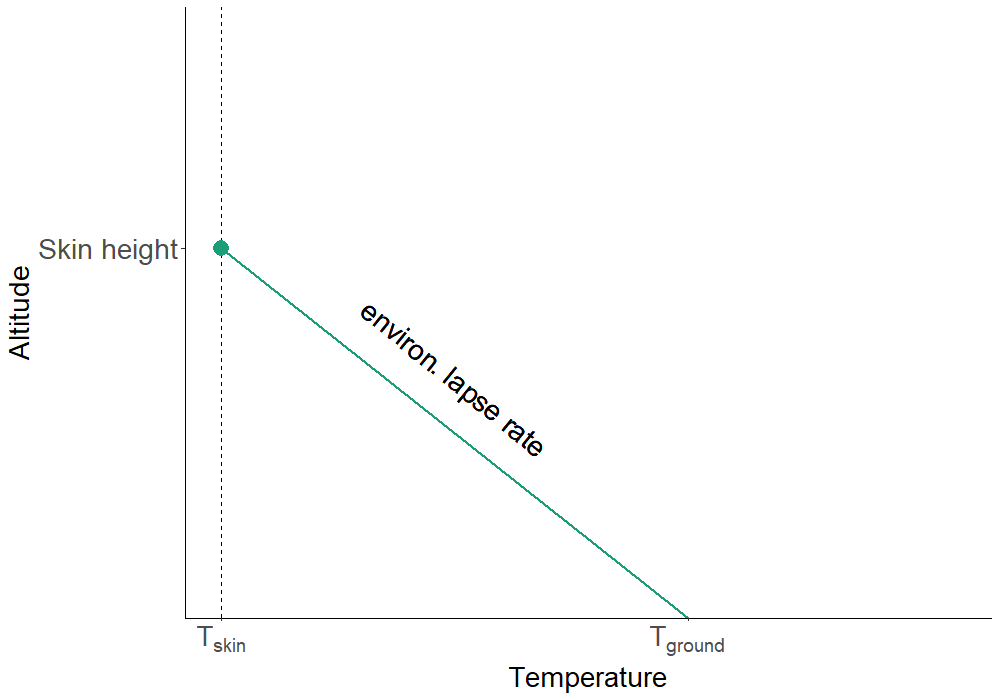
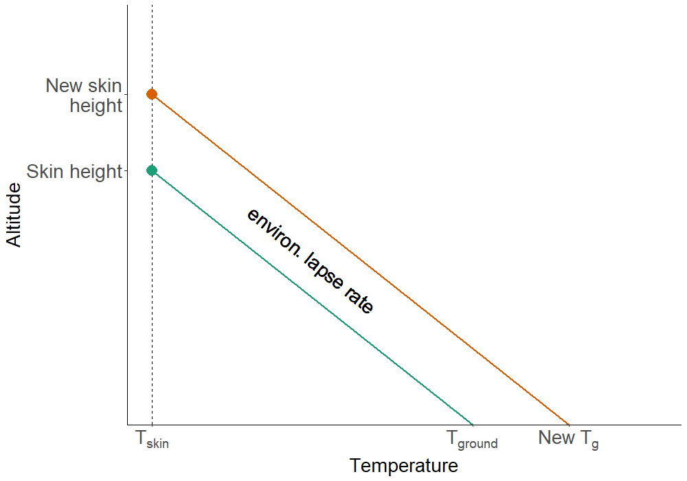
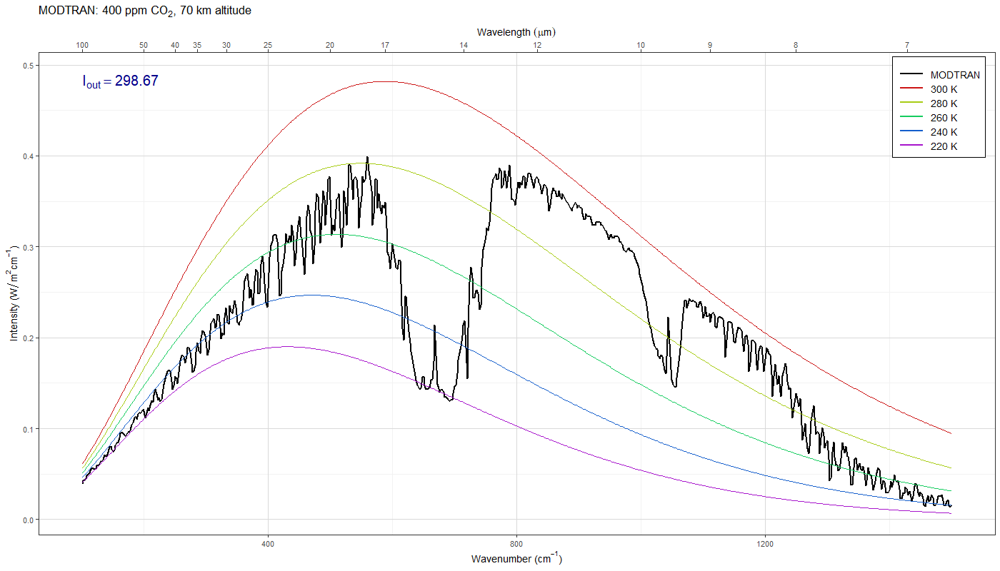
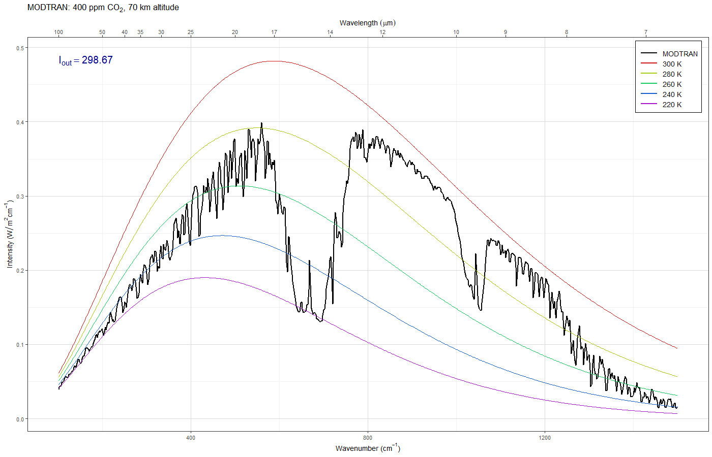

Review of the Greenhouse Effect
EES 2110
Introduction to Climate Change
Jonathan Gilligan
Class #9:
Monday, January 30
2023
Which lapse rate is greater?
Saturation, Convection, and the Greenhouse
Effect
Another Perspective on Band Saturation
- Instead of thinking of saturation as increasing absorption …
- Think of saturation as raising the skin height
- Skin height = the height at which the atmosphere becomes
transparent enough to radiate out to space
- The height of the top of the atmospheric layer in a layer model
- The atmosphere becomes opaque at a certain wavelength when there
are more than a certain number of molecules per square meter of an
absorbing gas overhead.
- The higher you go, the fewer molecules are overhead and the more
are below your feet.
- The atmosphere gradually becomes more transparent, but we
pretend that this happens suddenly at a certain height.
- Pressure and density fall exponentially as you go higher, so
this approximation is reasonable.
- After band saturation sets in, adding more greenhouse gas raises
the skin height.
Greenhouse effect

- Skin temp: \(T_{\text{skin}} =
T_{\text{bare rock}} = 254~\text{K}\).
- Ground temp: \(T_{\text{ground}} =
T_{\text{skin}} + h_{\text{skin}} \times \text{ELR}\)
- ELR = Environmental Lapse Rate
Global warming

- Greater CO2\(\rightarrow\) greater skin height.
- Warming: \(\Delta T_{\text{ground}} =
\Delta h_{\text{skin}} \times \text{env. lapse}\)
Question
- Water vapor absorption is saturated, like CO2.
- Why does water vapor emit at warmer temperatures than
CO2?

Answer
- Near the ground, there is much more water vapor (15 times more)
- Above about 7 km, there is much more CO2 (100 times more
at 20 km)
- Water vapor concentrations become small enough to be transparent
to space
at a much lower altitude than CO2
Review of the Greenhouse Effect
Review of the Greenhouse Effect
-
Start with bare-rock temperature
- This becomes skin temperature
- Add simple layer atmosphere:
- Completely black to longwave radiation
- Top of atmosphere: skin temperature (same as bare-rock)
- Atmosphere insulates surface \(\Rightarrow\) surface heats up
- More layers \(\Rightarrow\)
bigger greenhouse effect
- Realistic longwave absorption:
- Atmosphere is not black
- Absorption depends on wavelength
- Radiative-Convective equilibrium:
- Pure radiative equilibrium would have huge
environmental lapse rate
- Big lapse rate is unstable \(\Rightarrow\) convection
- ELR (16 K/km) > ALR (6–10 K/km)
- Convection mixes hot & cold air \(\Rightarrow\) reduces environmental lapse
until it becomes stable
- Reduces greenhouse effect
- Alternate perspective:
- Think of greenhouse effect in terms of raising the skin height
instead of blocking heat flow.
- Tskin is always T~bare rock~
- Tground = Tskin + hskin ×
Environmental Lapse Rate
Questions & Discussion of Greenhouse Effect
Atmospheric Radiation Spectrum
